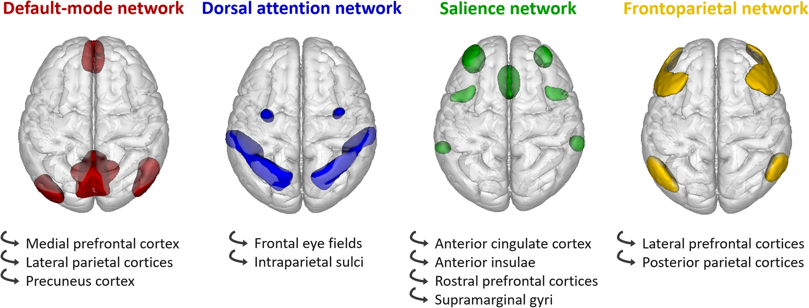

뇌 기능은 고립된 신경세포에서 비롯되지 않는다. 또한 하나의 뇌
구조물이 항상 똑같은 기능만을 발휘하는 것도 아니다. 신경계의 기능이
창발하는 곳은 뉴런과 뉴런의 연결패턴이요 그들이 이루는
신경연결망(neural network)이다. 해부학적 구조물 또한 다른
구조물과의 연결을 통해 합목적적 기능을 창출해낸다. “전체는 부분의 합보다
크다.(The whole is greater than the sum of its part)”라는 경구는
일반시스템 이론이나 복잡계 이론을 확립한 현대의 선구적인
학자들이 아니라, 무려 2,500년전에 활약한 아리스토텔레스에게서
비롯되었다.
뉴런과 뉴런의 연결 역시 서로 다른 층위에서 바라볼 수 있다.
특정한 대뇌 피질층(cortical layer)(2장 7-5절 참조)에 위치한
피라미드 뉴런과 주변의 사이 뉴런이 이루는 국소적 연결을 비롯하여, 동일한
피질 기둥에 속하지만 서로 다른 층(layer)에 놓인 뉴런 간의 원격
연결, 서로 다른 피질 기둥 간의 연결 등을 고려해 볼 수 있다. 이보다 좀더
거시적으로 보면, 하나의 해부학적 구조와 다른 구조 사이의 연결이 있다.
후자의 규모가 큰 연결들은 다수의 신경 경로(neural pathway)를 구성한다.
이들은 해부학적으로 bundle, fasciculus, tract, commissure와 같은 용어로
불리운다.
커넥톰(Connectome)이란 이렇게 거시적인 층위에서 신경 세포들이
연결되어 있는 양상을 종합적으로 표현한 것으로 일종의 뇌
회로도(blueprint)라고 생각할 수 있다. 좀 더 넓은 의미로는 단순히 뇌 내
신경세포 뿐만이 아니라 전신에 분포되어있는 신경세포들 간의 연결망까지도
포함한다. 2009년 시작된 인간 커넥톰 프로젝트(Human Connectome Project)는
게놈 프로젝트 이후 최대의 과학 혁명으로 불린다. 이 연구를 통해 1,000억
개 신경 세포의 연결구조와 활동원리를 파악해서 기억, 의식, 성격 등의
비밀을 밝히고자 한다. 이 프로젝트를 성공시킴으로써 치매, 우울증, 자폐증,
조현병 등의 발병 기전과 치료법을 찾는데 기여할 정보를 얻는다는 목표를
추구하고고 있다.
인간 커넥톰 프로젝트는 한국 혈통의 미국인 과학자인 승현준에
의해서 더욱 우리에게 친숙하다. 원래 컴퓨터 공학자이던 그는 인간 커넥톰
프로젝트의 출범 이후 그 가능성을 높이 평가하여, 저서 와 공개
강연을 통해 커넥톰의 무궁무진한 잠재력을 역설하였다.
커넥톰을 그리는 것은 확산강조 MRI(diffusion-weighted MRI)를 촬영하는
것으로 시작한다. 아무런 방해물이 없을 때 물 분자는 어느 한쪽으로도
치우침없이 대칭적으로 확산되며 이는 하나의 구(sphere)로 모델링 할 수
있다. 이 상태를 “등방성(isotropic)”이라고 한다. 만약 미엘린 수초에 의해
신경 경로가 절연되어 있으면, 물 분자가 특정한 방향으로 더 쉽게
확산되는데 이러한 상태를 “비등방성(anisotropic)”이라고 한다. 비등방성
상태가 되면 구(sphere)가 아니라 타원체(ellipsoid)를 이용하여 모델링하게
되는데, 이러한 방식으로 얻는 이미지를 “뇌 확산텐서영상(diffusion tensor
imaging, DTI)”이라고 한다. 얻어진 영상에 특별한 컴퓨터 알고리즘을
적용하면, 신경 경로를 추적하여 3차원 그래픽으로 표시할 수 있는데, 이를
신경섬유경로영상(fiber tractography)이라고 한다. 미국
국립보건원(NIH)에서 후원하고 있는 인간 커넥톰 프로젝트를 통해 얻어진
다양한 신경섬유경로영상은 웹사이트를
통해 내려받을 수 있으며, 이 자료는 다양한 연구에 활용되고 있다.
DTI를 통해서 얻어낸 자료는 해부학적 커넥톰에 해당한다. 그러나
해부학적으로 밝혀진 경로가 반드시 기능적으로도 의미가 있는 지는 확신할
수 없다. “기능적 연결성(functional connectivity)”이란 서로 떨어진 뇌
부위가 기능적으로도 서로 연결되어 있는지를 알아내는 방법이다. 이는
fMRI를 이용하여 안정상태 혹은 과업수행 상태에서 뇌의 각 부위에서
발생하는 동시다발적 신호의 연결성을 분석하여 얻어낸다. 이 작업에는
고도로 복잡한 컴퓨터 알고리즘이 적용되며, 현재까지도 어떤 것이 가장
정확하고 효율적인 알고리즘인지는 결정되지 않았다. 기능적 연결성을 통해
기능적 커넥톰을 제쟉할 수 있다. 기능적 커넥톰은 해부학적 커넥톰의
부분집합이라는 견해, 즉 해부학적으로 연결되어 있어야 기능적 연결도
가능해진다는 견해가 있지만, 반드시 그렇지만은 않다는 이론도 있다.(Tewarie et al.
2020) 뇌의 신비를 벗겨내기 위해 좀더 중요한 것은 기능적
커넥톰이겠지만, 이를 매핑하는 과정은 해부학적 커넥텀의 경우보다도 훨씬
더 어려운 과업이다.(Lang et al.
2012)
9-3. 커넥톰 핑거프린트
커넥톰은 개인마다 독특한 연결 패턴을 알 수 있도록 해준다. 이러한
패턴을 일종의 지문(fingerprint)에 빗대어 “커넥톰 핑거프린트(connectome
fingerprint)”라고 한다. 커넥톰 핑거프린트는 개인마다 다르며, 시간이
지나도 크게 변하지 않는다. 핑거프린트를 사용하여 특정 개인의 신원을
확인할 수 있을 정도이며, 특히 이 패턴은 그 사람의 인지 기능과 상관이
있다.[Finn et al. (2015)](Munsell et al.
2020)
당연한 이야기겠지만 개인마다 커넥톰 핑거프린트가 다르다면, 이를
그룹과 그룹 간에도 비교할 수 있을 것이다. 환자와 대조군, 혹은 각양
각색의 진단을 가진 환자군의 핑거프린트를 서로 비교하면, 각 진단군에
독특한 핑거프린트를 얻어낼 수 있을 것이다.(Wang et al. 2020) 다만 이러한 연구의
어려운 점은, 커넥톰 핑거프린트와 대응하는 표현형(phenotype)이 대체 어떤
것인지 미리 알 수 없다는 점이다. 주지하다시피, 정신과 진단이란 생물학적
병태생리와 일대일로 대응하지 않는다. 진단의 경계는 너무나 느슨하며고,
진단을 범주적(categorical diagnosis)으로 내려야할 지 차원적(dimensional
diagnosis)으로 내려야할 지도 의견이 모아지지 않았다. 만약 정신병적
증상에 해당하는 핑거프린트가 있다면 이는 조현병, 양극성 장애, 정신병적
우울증을 막론하고 나타날 것이다. 인지기능과 관련된 핑거프린트가 있다고
해도, 치매와 조현병을 구분하기 어려울 지 모른다.(Baker et al. 2019)
커넥톰 연구를 통해 세가지 광역 네트워크의 구조가 제시되었다. 첫번째,
“전두-두정엽 조절 네트워크(frontoparietal control network,
FPCN)”는 전전두엽과, 하두정소엽(inferior parietal lobule),
대상회의 중앙부위(middle cingulate gyrus)을 중심으로 연결되며, 과거
전전두엽이 맡고 있다고 여겨진 작업 기억과 집행 기능을 행사한다. 둘째,
“현저성 네트워크(salience network)”는 전측
섬엽(anterior insula)과 전측 대상회(anterior cingulate gyrus)로
구성되며, 의사소통, 사회적 행위, 자기 의식 등과 관련된 복잡한 기능을
맡는다. 혹자는 이를 “대상-판개 네트워크(cingulo-opercular
network, CON)”라고 부르기도 한다. 마지막으로 “디폴트
모드 네트워크(default mode network, DMN)”가 있다. 이는 내측
전전두엽(medial prefrontal cortex), 후측 대상회(posterior cingulate
gyrus) 그리고 각회(angular gyrus)로 이루어진다. DMN은 아무런 과업도
수행하지 않고 절대적 안정 상태에 있는 뇌에서 활성화되는 부분인데,
자아감이나 과거 회상, 미래에 대한 예측, 마음 이론, 도덕 판단 등
자기(self)와 관련된(self-referential) 기능을 행사할 때
사용된다고 여겨진다.(Andrews-Hanna 2012)

Figure 2. Global connectome network in
the human brain
from (Chabran et al.
2020)
이런 식으로 커넥톰에서 다루어지는 네트워크는 국소적 미세 연결부터
광역 네트워크까지 다양한 층위로 존재하며(Mars, Passingham, and Jbabdi 2018), 이에
대응하는 표현형 역시 다양한 층위로 고려될 수 있다. 광역 네트워크 이상에
해당되는 표현형은 지엽적인 진단명을 넘어서는 좀더 높은 층위에 해당할
것이다. 이러한 층위의 결정이 커넥톰 연구의 걸림돌로 남아있다.
9-4. 조현병의 커넥톰 이상
이러한 어려움에도 불구하고, 최근에는 정신과 진단에 따라 세가지 광역
네트워크(FPCN, CON, DMN)에 어떤 변화가 있는 지를 알아내려는 연구가
활발히 진행되고 있다. Baker 등(Baker et al. 2019)은
조현병과 기분 장애 환자 모두에서 FPCN의 연결성이 떨어지는 것이
발견되었으나, DMN의 연결성 저하는 조현병 그리고 정신병적 증상이 동반된
기분 장애 환자에서만 발견되었다고 하였다. 그러나 동시에 FPCN의 연결성
저하가 PANSS로 측정한 양성 증상과 비례 관계에 있었기 때문에, FPCN 역시
정신병적 증상 발현에 기여하는 것 같다고 하였다. 또 다른 연구자들은
조현병의 다유전자 위험 점수(PRS, 2장 1-6절
참조)가 FPCN과 DMN의 전반적 연결성과 역비례 관계에 있다고
하였다.(Cao, Zhou, and Cannon
2020)
유사한 연구에서 반복적으로 발견되는 조현병 환자의 FPCN 이상은, 조현병
증상이 “인지적 조절(cognitive control)”이라는 집행 기능의 결함에서
비롯된다는 것을 시사한다. 인지적 조절이란 의식적으로 인지적 자원을
당면한 과제에 집중시키는 능력을 의미한다.(Marek and Dosenbach 2018) FPCN은 그 안에
포함된 하위 구조들간의 왕성한 연결 말고도, 다른 광역 네트워크와의 활발한
연결을 특징으로 한다. 집행 기능이라는 이름에 걸맞게, 다양한 네트워크
들의 기능을 동조시키거나 조율한다. 그래서 FPCN을 “기능적 허브(functional
hub)”라고 부르기도 한다.(Power et al. 2013) 특히 FPCN은
학습/경험과 무관한 유동성 지능과 관계가 깊다.(Cole, Ito, and Braver 2015) 그런데
조현병 환자는 FPCN과 CON 혹은 DMN과의 연결성이 현저히 떨어진다.(Sheffield et al.
2015) 조현병 환자 뿐 아니라 우울증, 불안장애, 강박증 등에서도
FPCN의 연결성이 떨어지는 것이 발견되지만, 두 경우는 좀 차이가 난다. Cole
등(Cole, Repovš, and Anticevic
2014)은 이를 일차성과 이차성 기능 저하로
나눠 설명한다. 일차성 기능 저하는 그야말로 FPCN을 구성하는 회로 자체나
신경 세포의 손상 때문에 기능이 떨어지는 경우이다. 이에 비해, 이차성 기능
저하는, 회로 자체의 손상은 없으나 우울/불안 등의 다른 증상을 억누르기
위해 FPCN의 자원을 소진한 나머지, 정작 인지기능에 사용할 여지가 남지
않은 경우를 말한다. Cole 등은 FPCN의 일차성 기능 저하는 조현병과 양극성
장애의 특징이라고 주장한다.(Cole, Repovš, and Anticevic 2014) 이상을
종합하면, 조현병 환자의 뇌는 FPCN의 일차적 기능 저하를 특징적으로
보이며, FPCN 내부의 연결성이 떨어질 뿐 아니라 FPCN과 다른 광역
네트워크와의 연결성도 떨어진다. 이 상태는 유동성 지능을 떨어뜨릴 뿐
아니라, CON과 DMN의 활성을 조율시키지 못하여 정신병적 증상을 유발하기도
한다.
FPCN이 과업을 시작하는데 필요한 초기 인지적 조절을 담당한다면, CON은
목표를 놓치지 않도록 유지하며, 오류가 생겼을 때 행동을 조절하는 역할을
맡고 있다.(Godwin et al.
2017) 또한 내부로 부터 혹은 외부로 부터 전달되는 신호 중에서
현저하다고 여겨지는 신호를 탐지, 가공, 통합하는 역할을 맡는다.(Huang et al. 2020) CON의 연결성은 주어진
과제의 난이도가 높아질수록 강해지는 경향을 보인다.(Sheffield et al. 2015) 일부 연구에서는
조현병 환자에서 CON의 내부 연결성이 정상 대조군보다 낮으며, 그 정도는
음성 증상과 음의 상관관계를 보인다고 한다.(Tu
et al. 2012) 또 다른 연구에서는 정신병적 증상을 잠깐이나마
경험했던 일반인을 대상으로, 증상의 심각도와 CON 연결성을 비교했더니 역시
음의 상관관계가 관찰되었다.(Sheffield et al. 2016) CON의 연결성이
단순히 인지 기능 저하를 반영하는 것인지, 망상의 기초가 되는 것인지는
아직 확실하지 않다.
비정상적 현저성 이론(2장 6-4절 참조)은 망상을
형성하는 과정을 설명하는 주요 이론 중 하나이기 때문에, CON에 대한 관심은
여전히 높은 편이다. 더구나 CON은 FPCN과 DMN 사이를 매개하는 일종의
스위치 역할을 하기 때문에 더욱 중요성이 강조되었다.(Dosenbach et al.
2007) 앞에서도 잠깐 언급되었지만 FPCN은 목표 지향적으로
과제를 해결해야할 때 활성화되는 네트워크인 반면, DMN은 자극이나 과제가
없는 상태에서 정신내적 세계에 머무를 때 활성화된다. 안정상태에서 DMN이
활성화되어 있는 개체가 무언가 평소와 다른 자극을 감지하면, CON은 이
자극이 해결을 요구하는 가치가 있는지 아니면 무시해도 되는지를 결정한다.
만약 전자라면 DMN을 잠시 비활성화하는 대신, FPCN을 활성화시킴으로써
새로운 과제를 해결하고자 한다. 조현병 환자는 외적 세계와 내적 세계를
혼동하는 경향이 있으며, 무시해도 될 자극과 중요한 자극을 걸러내지
못한다. 이러한 인지적 메커니즘의 오작동이, 온전하지 못한 CON 때문인지도
모른다. 따라서 연구자들이 CON의 이상을 확인하고자 애쓰는 것도 무리가
아니다.(Huang et al.
2020)
DMN이란 개념은 2001년 Raichle에 의해 제안되었다.(Raichle et al.
2001) fMRI 연구를 할 때는 특정 과업을 주었을 때 활성화되는 뇌
영역을 찾기 위해 아무 과제도 주지 않은 안정상태(baseline)와 비교하게
되는데, 이 안정상태에서도 특정 뇌 부위가 독특한 패턴으로 활성화된다는
것이 DMN을 찾게된 계기가 되었다. DMN을 이루는 뇌 구조물은 예로부터
조현병과 관련하여 많이 연구되던 부위들이고, DMN이 담당하는 뇌 기능 역시
조현병 증상과 연관이 있기 때문에 일찌기 조현병과의 관련여부가
연구되었다.(Hu et al.
2017)
조현병과 관련한 DMN 이상을 최초로 보고한 연구자는 Garrity 등(Garrity et al.
2007)이다. 이들은 DMN 활성을 유도하는 인지과제를 주고, 뇌
대사가 활성화되는 부위와 주파수 특성을 측정한 후 환자군과 정상 대조군을
비교하였다. 그 결과 두 군 사이의 유의한 차이를 발견해내었다. 같은 해
Bluhm 등(Bluhm et al.
2007)은 조현병 환자는 DMN의 중심 구조인 후측 대상회(posterior
cingulate gyrus)와 기타 영역들 간의 연결성이 떨어진다고 하였다. 하지만
혼란스럽게도, 이후 DMN의 활성 정도나 기능적 연결성을 환자군과 대조군
사이에 비교하는 연구들이 이어졌으나, 일관된 결과를 얻지는 못하였다.(Hu et al. 2017)
실험결과를 떠나서 연구자들은, 안정상태에서는 DMN이 활성화되어 있다가
현저성(salience)을 지닌 자극이 감지되면 순간적으로 DMN이 비활성화되면서
FPCN으로 활성이 옮겨간다고 생각하며, 이러한 역동적 전환이 제대로
이루어지지 않는 것이 조현병 환자의 특성이라 여긴다. FPCN과 DMN은 서로
음의 상관관계(anti-correlation)를 갖는 것이 정상적인데(Uddin et al. 2009), 조현병 환자에서는
이러한 음의 상관관계가 덜 뚜렷하게 나타난다.[Whitfield-Gabrieli et al. (2009)](Wotruba et al. 2014)
한편 연결성의 이상은 조현병 환자에게 흔히 동반되는 연성 신경학적
징후(neurological soft signs)와도 연관이 있다고 한다.(Kong et al. 2020) 적지 않은 연구자들은
DMN의 활성 및 연결성을 조현병의 대표적인 생물학적 지표의 하나로 간주하고
있다
Andrews-Hanna, Jessica R. 2012. “The Brain’s Default Network and
Its Adaptive Role in Internal Mentation.”Neuroscientist
18 (3): 251–70. https://doi.org/10.1177/1073858411403316.
Baker, Justin T, Daniel G Dillon, Lauren M Patrick, Joshua L Roffman,
Roscoe O Brady Jr, Diego A Pizzagalli, Dost Öngür, and Avram J Holmes.
2019. “Functional Connectomics of Affective and Psychotic
Pathology.”Proc. Natl. Acad. Sci. U. S. A. 116 (18):
9050–59. https://doi.org/10.1073/pnas.1820780116.
Bluhm, Robyn L, Jodi Miller, Ruth A Lanius, Elizabeth A Osuch, Kristine
Boksman, R W J Neufeld, Jean Théberge, Betsy Schaefer, and Peter
Williamson. 2007. “Spontaneous Low-Frequency Fluctuations in the
BOLD Signal in Schizophrenic Patients: Anomalies in the
Default Network.”Schizophr. Bull. 33 (4): 1004–12. https://doi.org/10.1093/schbul/sbm052.
Buuren, Mariët van, Matthijs Vink, and René S. Kahn. 2012.
“Default-Mode Network Dysfunction and Self-Referential Processing
in Healthy Siblings of Schizophrenia Patients.”Schizophrenia
Research 142 (1-3): 237–43. https://doi.org/10.1016/j.schres.2012.09.017.
Cao, Hengyi, Hang Zhou, and Tyrone Cannon. 2020. “O2.4. Functional
Connectome-Wide Associations of Schizophrenia Polygenic Risk.”Schizophr. Bull. 46 (Supplement_1): S4–5. https://doi.org/10.1093/schbul/sbaa028.009.
Chabran, Eléna, Vincent Noblet, Paulo Loureiro de Sousa, Catherine
Demuynck, Nathalie Philippi, Catherine Mutter, Pierre Anthony, Catherine
Martin-Hunyadi, Benjamin Cretin, and Frédéric Blanc. 2020.
“Changes in Gray Matter Volume and Functional Connectivity in
Dementia with Lewy Bodies Compared to Alzheimer’s Disease and Normal
Aging: Implications for Fluctuations.”Alzheimers. Res.
Ther. 12 (1): 9. https://doi.org/10.1186/s13195-019-0575-z.
Cole, Michael W, Takuya Ito, and Todd S Braver. 2015. “Lateral
Prefrontal Cortex Contributes to Fluid Intelligence Through Multinetwork
Connectivity.”Brain Connect. 5 (8): 497–504. https://doi.org/10.1089/brain.2015.0357.
Cole, Michael W, Grega Repovš, and Alan Anticevic. 2014. “The
Frontoparietal Control System: A Central Role in Mental Health.”Neuroscientist 20 (6): 652–64. https://doi.org/10.1177/1073858414525995.
Dosenbach, Nico U F, Damien A Fair, Francis M Miezin, Alexander L Cohen,
Kristin K Wenger, Ronny A T Dosenbach, Michael D Fox, et al. 2007.
“Distinct Brain Networks for Adaptive and Stable Task Control in
Humans.”Proc. Natl. Acad. Sci. U. S. A. 104 (26):
11073–78. https://doi.org/10.1073/pnas.0704320104.
Finn, Emily S, Xilin Shen, Dustin Scheinost, Monica D Rosenberg, Jessica
Huang, Marvin M Chun, Xenophon Papademetris, and R Todd Constable. 2015.
“Functional Connectome Fingerprinting: Identifying Individuals
Using Patterns of Brain Connectivity.”Nat. Neurosci. 18
(11): 1664–71. https://doi.org/10.1038/nn.4135.
Galindo, Liliana, Daniel Bergé, Graham K Murray, Anna Mané, Antonio
Bulbena, Victor Pérez, and Oscar Vilarroya. 2017. “Default Mode
Network Aberrant Connectivity Associated with Neurological Soft Signs in
Schizophrenia Patients and Unaffected Relatives.”Front.
Psychiatry 8: 298. https://doi.org/10.3389/fpsyt.2017.00298.
Garrity, Abigail G, Godfrey D Pearlson, Kristen McKiernan, Dan Lloyd,
Kent A Kiehl, and Vince D Calhoun. 2007. “Aberrant ‘Default
Mode’ Functional Connectivity in Schizophrenia.”Am.
J. Psychiatry 164 (3): 450–57. https://doi.org/10.1176/ajp.2007.164.3.450.
Godwin, Douglass, Andrew Ji, Sridhar Kandala, and Daniel Mamah. 2017.
“Functional Connectivity of Cognitive Brain Networks in
Schizophrenia During a Working Memory Task.”Front.
Psychiatry 8 (December): 294. https://doi.org/10.3389/fpsyt.2017.00294.
Guo, Wenbin, Feng Liu, Jindong Chen, Renrong Wu, Lehua Li, Zhikun Zhang,
Huafu Chen, and Jingping Zhao. 2017. “Hyperactivity of the
Default-Mode Network in First-Episode, Drug-Naive Schizophrenia at Rest
Revealed by Family-Based Case-Control and Traditional Case-Control
Designs.”Medicine 96 (13): e6223. https://doi.org/10.1097/MD.0000000000006223.
Hu, Mao-Lin, Xiao-Fen Zong, J John Mann, Jun-Jie Zheng, Yan-Hui Liao,
Zong-Chang Li, Ying He, Xiao-Gang Chen, and Jin-Song Tang. 2017.
“A Review of the Functional and Anatomical Default Mode Network in
Schizophrenia.”Neurosci. Bull. 33 (1): 73–84. https://doi.org/10.1007/s12264-016-0090-1.
Kong, Li, Christina J Herold, Eric F C Cheung, Raymond C K Chan, and
Johannes Schröder. 2020. “Neurological Soft Signs and Brain
Network Abnormalities in Schizophrenia.”Schizophr.
Bull. 46 (3): 562–71. https://doi.org/10.1093/schbul/sbz118.
Lang, E W, A M Tomé, I R Keck, J M Górriz-Sáez, and C G Puntonet. 2012.
“Brain Connectivity Analysis: A Short Survey.”Comput.
Intell. Neurosci. 2012 (October): 412512. https://doi.org/10.1155/2012/412512.
Mars, Rogier B, Richard E Passingham, and Saad Jbabdi. 2018.
“Connectivity Fingerprints: From Areal Descriptions to Abstract
Spaces.”Trends Cogn. Sci. 22 (11): 1026–37. https://doi.org/10.1016/j.tics.2018.08.009.
Munsell, B C, E Gleichgerrcht, E Hofesmann, J Delgaizo, C R McDonald, B
Marebwa, M A Styner, et al. 2020. “Personalized Connectome
Fingerprints: Their Importance in Cognition from Childhood to Adult
Years.”Neuroimage 221 (November): 117122. https://doi.org/10.1016/j.neuroimage.2020.117122.
Power, Jonathan D, Bradley L Schlaggar, Christina N Lessov-Schlaggar,
and Steven E Petersen. 2013. “Evidence for Hubs in Human
Functional Brain Networks.”Neuron 79 (4): 798–813. https://doi.org/10.1016/j.neuron.2013.07.035.
Raichle, M E, A M MacLeod, A Z Snyder, W J Powers, D A Gusnard, and G L
Shulman. 2001. “A Default Mode of Brain Function.”Proc. Natl. Acad. Sci. U. S. A. 98 (2): 676–82. https://doi.org/10.1073/pnas.98.2.676.
Sheffield, Julia M, Sridhar Kandala, Gregory C Burgess, Michael P Harms,
and Deanna M Barch. 2016. “Cingulo-Opercular Network Efficiency
Mediates the Association Between Psychotic-Like Experiences and
Cognitive Ability in the General Population.”Biol Psychiatry
Cogn Neurosci Neuroimaging 1 (6): 498–506. https://doi.org/10.1016/j.bpsc.2016.03.009.
Sheffield, Julia M, Grega Repovs, Michael P Harms, Cameron S Carter,
James M Gold, Angus W MacDonald 3rd, J Daniel Ragland, Steven M
Silverstein, Douglass Godwin, and Deanna M Barch. 2015.
“Fronto-Parietal and Cingulo-Opercular Network Integrity and
Cognition in Health and Schizophrenia.”Neuropsychologia
73 (July): 82–93. https://doi.org/10.1016/j.neuropsychologia.2015.05.006.
Tewarie, Prejaas, Bastian Prasse, Jil M Meier, Fernando A N Santos,
Linda Douw, Menno M Schoonheim, Cornelis J Stam, Piet Van Mieghem, and
Arjan Hillebrand. 2020. “Mapping Functional Brain Networks from
the Structural Connectome: Relating the Series Expansion and Eigenmode
Approaches.”Neuroimage 216 (August): 116805. https://doi.org/10.1016/j.neuroimage.2020.116805.
Tu, Pei-Chi, Jen-Chuen Hsieh, Cheng-Ta Li, Ya-Mai Bai, and Tung-Ping Su.
2012. “Cortico-Striatal Disconnection Within the Cingulo-Opercular
Network in Schizophrenia Revealed by Intrinsic Functional Connectivity
Analysis: A Resting fMRI Study.”Neuroimage 59 (1): 238–47. https://doi.org/10.1016/j.neuroimage.2011.07.086.
Uddin, Lucina Q, A M Kelly, Bharat B Biswal, F Xavier Castellanos, and
Michael P Milham. 2009. “Functional Connectivity of Default Mode
Network Components: Correlation, Anticorrelation, and Causality.”Hum. Brain Mapp. 30 (2): 625–37. https://doi.org/10.1002/hbm.20531.
Wang, Danhong, Meiling Li, Meiyun Wang, Franziska Schoeppe, Jianxun Ren,
Huafu Chen, Dost Öngür, Roscoe O Brady Jr, Justin T Baker, and Hesheng
Liu. 2020. “Individual-Specific Functional Connectivity Markers
Track Dimensional and Categorical Features of Psychotic Illness.”Mol. Psychiatry 25 (9): 2119–29. https://doi.org/10.1038/s41380-018-0276-1.
Whitfield-Gabrieli, Susan, and Judith M Ford. 2012. “Default Mode
Network Activity and Connectivity in Psychopathology.”Annu.
Rev. Clin. Psychol. 8 (January): 49–76. https://doi.org/10.1146/annurev-clinpsy-032511-143049.
Whitfield-Gabrieli, Susan, Heidi W Thermenos, Snezana Milanovic, Ming T
Tsuang, Stephen V Faraone, Robert W McCarley, Martha E Shenton, et al.
2009. “Hyperactivity and Hyperconnectivity of the Default Network
in Schizophrenia and in First-Degree Relatives of Persons with
Schizophrenia.”Proc. Natl. Acad. Sci. U. S. A. 106 (4):
1279–84. https://doi.org/10.1073/pnas.0809141106.
Wotruba, Diana, Lars Michels, Roman Buechler, Sibylle Metzler, Anastasia
Theodoridou, Miriam Gerstenberg, Susanne Walitza, Spyros Kollias, Wulf
Rössler, and Karsten Heekeren. 2014. “Aberrant Coupling Within and
Across the Default Mode, Task-Positive, and Salience Network in Subjects
at Risk for Psychosis.”Schizophr. Bull. 40 (5):
1095–1104. https://doi.org/10.1093/schbul/sbt161.